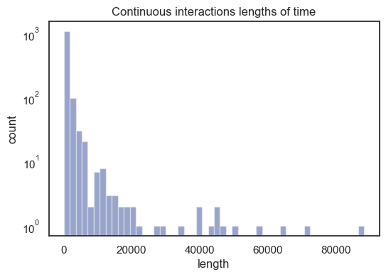

Use your arrow keys to continue...

...Or click on the arrows in the bottom right...
(Or swipe on a touchscreen device)
What does the HLH pole data tell us?
Firstly, what actually is the data?
The main piece of data comes from HOBOware, and can be exported easily to .csv files.
There are about 6 main csv files that are useful, 3 for the HLH pole at Memorial Square, & 3 for the HLH pole at Olds Park.
The data that these provide is a timeseries of AC Currents in amps. It reports the AC Current observed every 90 seconds for the time period it's on.
To give an idea of some example currents, some setup data was recorded. In this setup data, various devices and their respective AC Currents are recorded.
So, what does this data tell us?
There are three main questions that we will try to answer:
Cost
How much power is being used? Is it worth it?
When
How often are the HLH's interacted with?
What
How long are the interactions that end users have with the HLH pole? Is there any further information that can be gathered here?
The method for investigation is using the programming language Python3, on a jupyter notebook. Some key libraries used are matplotlib, seaborn, pandas, and numpy.
This is most of the code in the background, feel free to scroll through it if you'd like to see the details. The file is DataExploration.html in the repository. (If you do scroll through it, you'll need to use the arrows in the bottom right to progress)
At a first glance, we can map out a histogram of currents, which shows us what the most common current outputs are.
.
At a first glance, we can map out a histogram of currents, which shows us what the most common current outputs are.
(Maquarie Square data will be displayed on the left, and Olds Park data will be displayed on the right.)
From this data, we can figure out how much power is used by the HLH
After some calculations, it turns out that:
- MSQ HLH used an average of 0.71kWh a day
- OP HLH used an average of 0.30kWh a day
For comparison, if a standard public barbeque is used for half an hour a day, it would use approximately 1.2kWh.
Further, the MSQ HLH had some very large unusual spikes of current draw that potentially affected its total draw significantly, that would likely not happen regularly (they were often the first datapoint), and so the OP average of 0.3kWh is probably more accurate.
This would mean that around 4 HLH poles would use the same amount of electricity as one barbeque session per day.
Looking at when these current draws occur, we can see that only very rarely do large current draws occur, with the vast majority being lower then half an amp. There seems to be a trend of high current usage in the middle of the day for MSQ, but we will soon see this is a very small proportion of the data.
 The average by time of day makes it seem as if these large current draws didn't exist due to the sheer number of small current draws.
The average by time of day makes it seem as if these large current draws didn't exist due to the sheer number of small current draws.
Looking more at the spread of these currents now, we can show the distribution more clearly by taking a logarithmic scale, showing the large amount of results in the lower current range.
According to the test data, all 'on' states were above 0.135 (where approximately 0.118 was the average HLH-only value) and so we can use this as the splitting point for whether the HLH was considered on or not.
This has been indicated by a red vertical line on the following graphs. The count values prior to this are considerably high, showing how a considerable amount of time is spent as HLH-only, or in other words, no one is using it.
From now on, most of the data we will investigate will only include the "other" portion of the data - where the HLH is considered to be used.
We can then map out the same AC Current histogram plot but only with this "other" data to understand the spread of currents when it is used.
...and also the histogram of the time of day where it is used. This shows us that the HLH seems to have quite consistent usage at MSQ, with a small swell in the middle of the day. However, at OP, this swell is far more exaggerated, suggesting greater difference of use at different times of day.
That data is useful, but what currents are being used at different times of day? Looking at this stacked bar chart, we can see that the larger current draws are very rare and most of the time the HLH is using less than 0.25A when being used.
There seems to be a fairly consistent draw of ≈0.22A to ≈0.25A usage during the day, with ≈0.2A being more common in the morning, switching over to ≈0.15A in the evening.
The values higher than ≈0.3A are too inconsistent to note any substantial trends from in these graphs.
There is a slightly higher amount of ≈0.25A at MSQ, with few above this at OP at all.
Looking at the current splits on a weekly basis rather than half-hourly, we can see that generally weekdays have a similar ratio of power usages, with Friday having a larger than usual percentage of ≈0.2A current usage at MSQ, and Monday having the only ≈0.15A current.
In MSQ, we can see that there is a significant drop in activity from Monday to Tuesday, and then a slow crawl up from Tuesday onwards.
In OP however, activity is high on Mondays, Tuesdays, Fridays, and Saturdays, and low on the other days.
 Just to check that this isn't the case due to an uneven amount of datapoints collected, we can check the total datapoints collected for each weekday in this histogram, which displays fairly similar datapoint counts, with a slight swell on Thursday/Friday.
Just to check that this isn't the case due to an uneven amount of datapoints collected, we can check the total datapoints collected for each weekday in this histogram, which displays fairly similar datapoint counts, with a slight swell on Thursday/Friday.
Lets now look at the data for each of these weekdays in greater detail quickly.
Tuesday

Looking at each of the days of the week more in depth we can see that at MSQ from Tuesday-Thursday there isn't as much usage in the morning, whereas Friday-Monday have consistent usage even during the middle of the night.
This may be due to lighting settings that are on for these days, as Thursday-Sunday nights are potentially more likely to have activity.
It may also be due to people turning these lights on because they are in these areas at this time.
At OP however, there is considerably less usage overall, with several patches in the dataset of no activity.
Activity generally spikes in the morning, with Thursday and Sunday as exceptions.
Lower currents are being used on Saturday, with the rest having a fairly consistent mix of ≈0.18A-≈0.24A.
Another thing to note is that higher current usages are more likely to be observed later in the day at MSQ.
This may be evidence that people are using the HLH poles to power and charge things moreso during the evening such as phones, laptops, bluetooth speakers, and so on.
However, having said this, it's difficult to say what is being used as a lot of appliances use very similar (low) current draws, especially those that are likely to be plugged in here.
For example, a toaster or air conditioning unit may have a much higher current draw but are unlikely to be plugged into the HLH pole.
The below graphs demonstrate that most interactions have quite a short length, with a few exceptions, such as the three 24hr+ long interaction outliers (80000+ seconds).
The downside to this data really though is the 90-second interval used for recording, which makes suggesting the actual length of an interaction difficult if it less than 3 interactions, or 270 seconds.
If we zoom in however, we can understand in better detail what lengths are occuring.

...And then zoom in again...
 We can see that there is still a spread of lengths at the lower end of time lengths, especially at MSQ.
We can see that there is still a spread of lengths at the lower end of time lengths, especially at MSQ.
From this data, we can figure out some statistics about how long an interaction with an end user is.
After some calculations, it turns out that:
- MSQ HLH had an average interaction length of 1541.85s
- MSQ HLH had a median interaction length of 180s
- OP HLH had an average interaction length of 7449.05s
- OP HLH had a median interaction length of 360
As seen above, the average length is considerably higher than the median length—this is because of some very large outliers, such as the 24.5hr length observed earlier.
According to these processes, there's about a 70% chance that someone will use the HLH for less than 10 minutes at MSQ and 20 minutes at HLH.
However, this includes some substantial caveats.
Overall, it is difficult to tell when a current corresponds to a particular device being used, due to differences in current draws even within the one device (which I came to the conclusion of after some googling & talking to electrical engineers).
This can be demonstrated by the draw of the laptop in the test data.
Also, if a particular use of one device was uninterrupted but another user began or stopped drawing current, it would be counted as a different device.
Further research into this area is required for better results.
A potentially better method would include extensive testing and recording of current draws by a variety of appliances, which is then fed into a Machine Learning classifier to train it.
Finally, lets look at the relationship between interaction length and the current drawn.
As we can see in these plots, a high volume of low length, low current interactions exist.
If we apply a logarithmic scale on both axes however, we can see that there are also higher length low current interactions, and a small amount of higher current low length interactions.
So—what does the HLH pole data tell us?
Lets revisit those questions.
How much power is being used? Is it worth it?
Not very much, about the same as a quarter of a public barbeque used once a day. I'd say it's worth it!
How often are the HLH's interacted with?
It depends, but it seems like during the day is a good bet, with MSQ having more activity in the afternoon/evening and OP more activity in the morning.
How long are the interactions that end users have with the HLH pole? Is there any further information that can be gathered here?
Usually, it's fairly short. OP generally has longer lasting interactions than MSQ, with around 10 mins being about average overall. Some interactions are quite long (24h!!) but this is likely just due to the way the data has been analysed.
As for whether there is any more information that can be gleaned, it's highly unlikely that heavy duty appliances (e.g. fridges, heat guns) are being plugged in, but it's difficult to say more than that.
Thank you!
- Baptiste Higgs